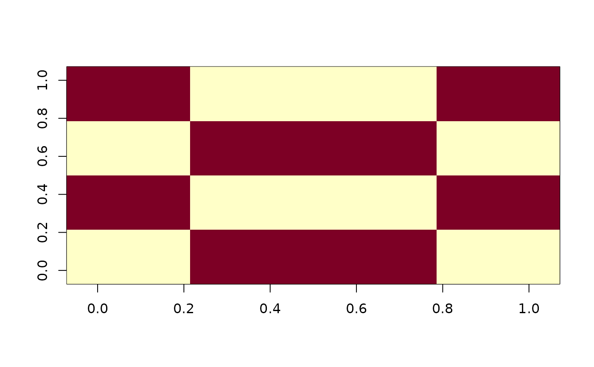

Panmagic squares of order 8
panmagic.8.RdProduces each of a wide class of order 8 panmagic squares
Note
Not all choices for chosen give normal magic squares. There
seems to be no clear pattern. See website in references for details.
Examples
is.panmagic(panmagic.8(chosen=2:7))
#> [1] TRUE
is.normal(panmagic.8(chosen=2:7))
#> [1] FALSE
is.normal(panmagic.8(chosen=c(1,2,3,6,7,8)))
#> [1] FALSE
#to see the twelve basis magic carpets, set argument 'chosen' to each
#integer from 1 to 12 in turn, with vals=1:
panmagic.8(chosen=1,vals=1)-1
#> [,1] [,2] [,3] [,4] [,5] [,6] [,7] [,8]
#> [1,] 1 1 0 0 1 1 0 0
#> [2,] 0 0 1 1 0 0 1 1
#> [3,] 1 1 0 0 1 1 0 0
#> [4,] 0 0 1 1 0 0 1 1
#> [5,] 0 0 1 1 0 0 1 1
#> [6,] 1 1 0 0 1 1 0 0
#> [7,] 0 0 1 1 0 0 1 1
#> [8,] 1 1 0 0 1 1 0 0
image(panmagic.8(chosen=12,vals=1))
